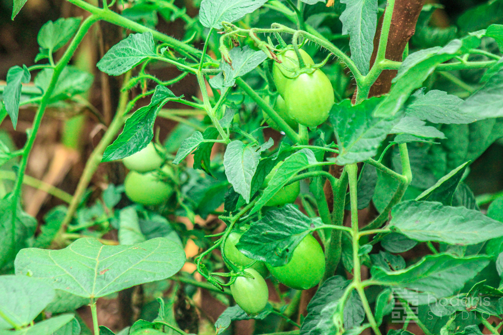
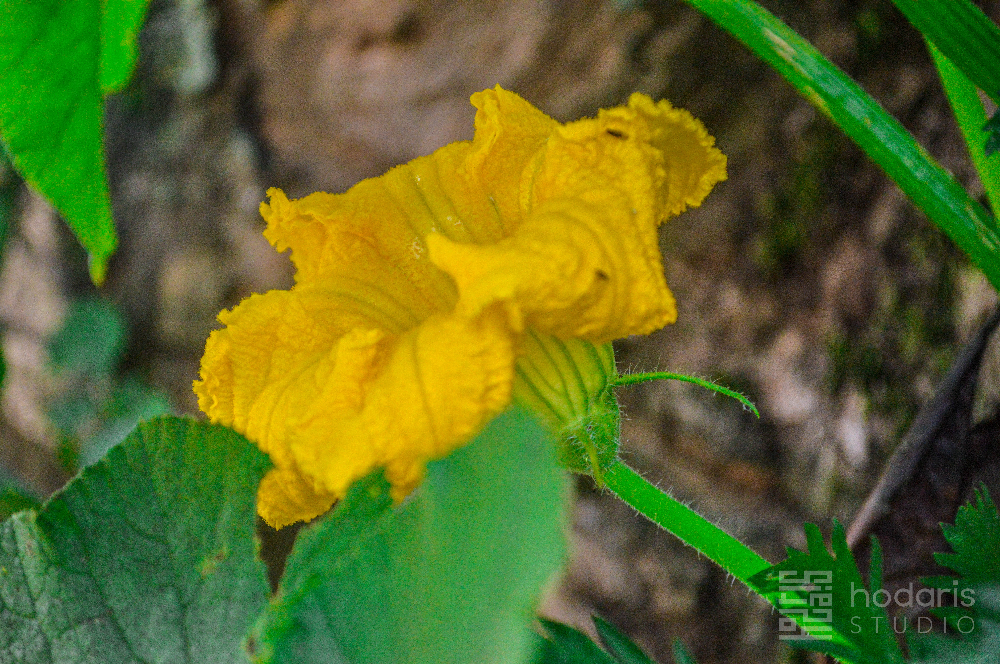

01 / SOIL & WATER
01 / SOIL & WATER
Build healthy soil, slowly
Feed the soil with compost and organic matter, keep it covered, and observe how it responds before reaching for quick fixes.
Explore soil notes
Hodaris Press Garden Journal
GROWING NOTES · FIELD JOURNAL
From soil to table
Growing food is a practice of attention: learn your soil, notice the weather, and make room for the small things to thrive.
Explore the gardenA living notebook
Useful, grounded notes for people who want to grow more — whether you have a backyard, a balcony, a few containers, or a patch of good soil.
Browse by what you need
01 / SOIL & WATER
Feed the soil with compost and organic matter, keep it covered, and observe how it responds before reaching for quick fixes.
Explore soil notes
02 / PLANTINGChoose crops your household enjoys, start with a manageable bed or container, and give each plant the light and space it needs.
Explore planting notes
03 / HARVESTLearn to spot the stages of fruiting, pick at the right time, and make the most of what your garden gives you.
Explore harvest notesNo notes in this category yet. Choose another topic to keep exploring.
The garden practice
Notice sunlight, water flow, soil texture and the life already present in your space.
Start with a few familiar crops, then learn from each planting before expanding.
Every season offers new information. Record what worked and what you might try next.

Beyond the vegetable bed
Flowers, herbs, food plants and the creatures they welcome all belong in the story of a garden.
Visit the galleryKeep growing with us